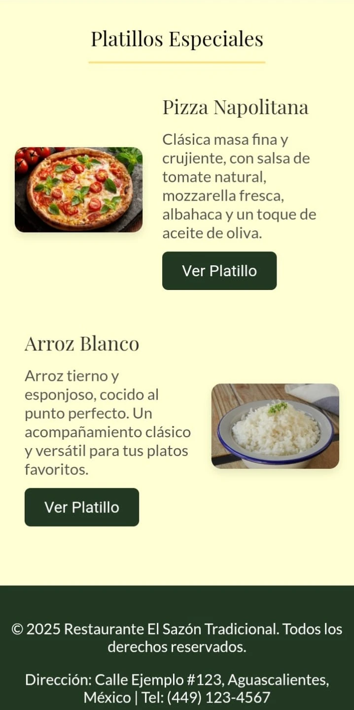

Sobre Gastronome
Nos especializamos en el desarrollo web para restaurantes, creando menús digitales y páginas modernas, funcionales y atractivas. Nuestro enfoque es minimalista, elegante y eficiente, ayudando a negocios gastronómicos a destacar en el mundo digital.
¿Qué hacemos?
Creamos menús QR con modelos 3D, fáciles de actualizar y visualmente atractivos. También desarrollamos páginas web modernas y personalizadas para tu restaurante.
Inspiración Gastronómica
Cada plato cuenta una historia. Nos inspira la pasión de los chefs y la creatividad de cada restaurante. Diseñamos soluciones digitales que reflejan la esencia única de tu cocina y tu equipo.
Lo que opinan de nosotros

Excelente servicio, el menú digital es súper fácil de usar y mis clientes lo aman.
- Chef Mariana, Bistro Verde
El diseño de la web es moderno y elegante, justo lo que buscaba para mi restaurante.
- Luis R., Parrilla Norte